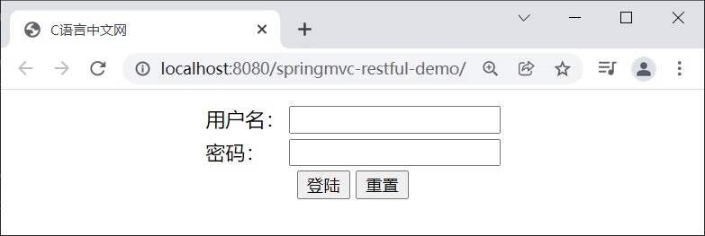
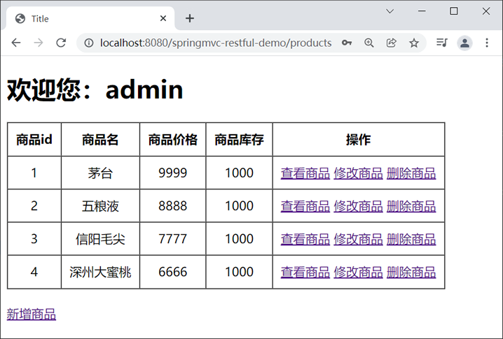
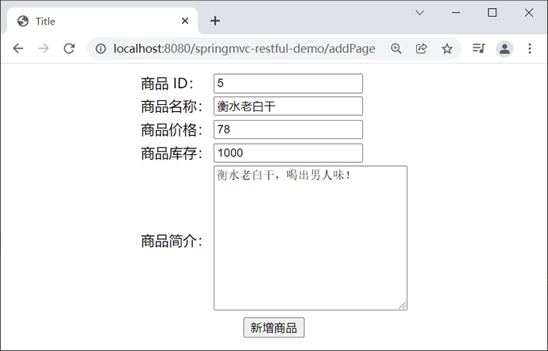
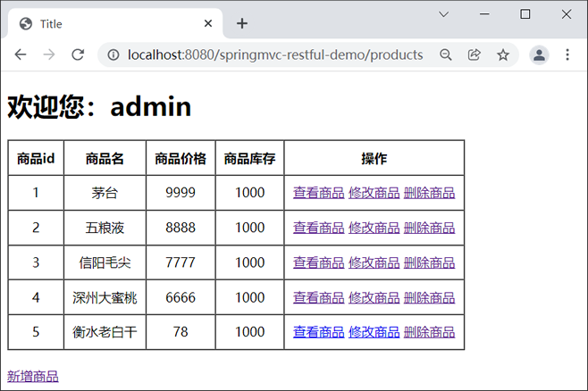
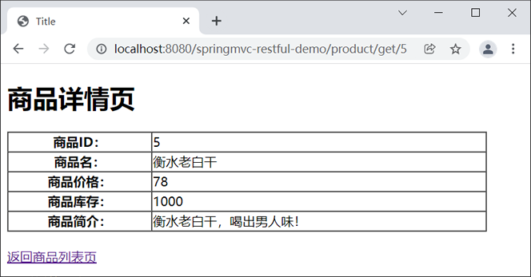
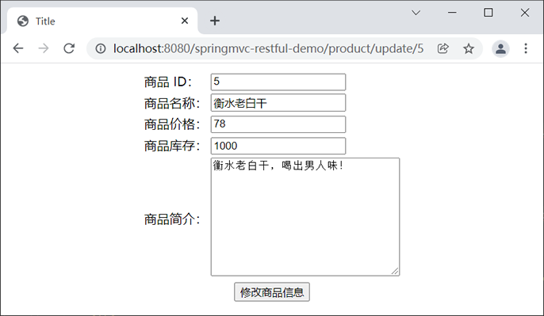
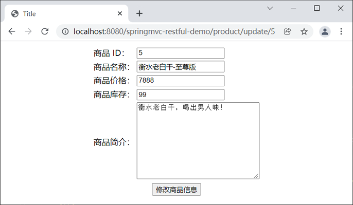
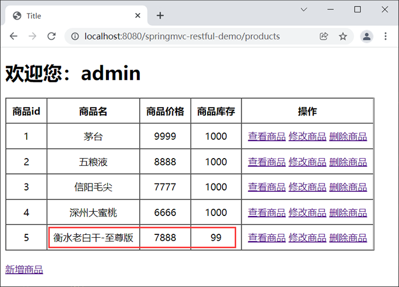
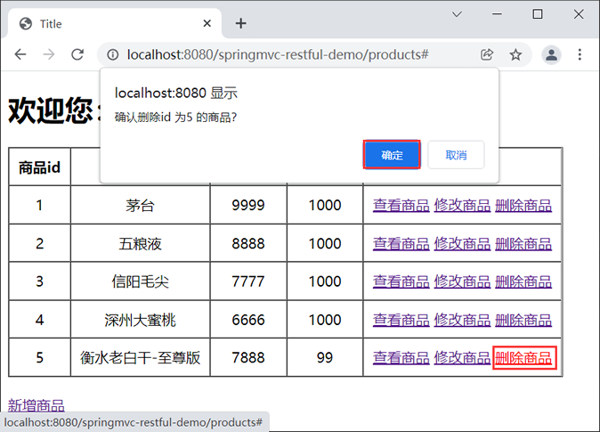

首页 > Spring MVC
Spring MVC实现RESTful
在 Spring MVC 中，我们可以通过 @RequestMapping +@PathVariable 注解的方式，来实现 RESTful 风格的请求。
注意：value 属性中占位符的位置应当与请求 URL 中参数的位置保持一致，否则会出现传错参数的情况。
HiddenHttpMethodFilter 处理 PUT 和 DELETE 请求时，必须满足以下 2 个条件：
在满足了以上条件后，HiddenHttpMethodFilter 过滤器就会将当前请求的请求方式转换为请求参数 _method 的值，即请求参数 _method 的值才是最终的请求方式，因此我们需要在 POST 请求中携带一个名为 _method 的参数，参数值为 DELETE 或 PUT。
1. 新建一个名为 springmvc-restful-demo 的 Web 项目，并将 Spring MVC 相关依赖引入到该项目中，web.xml 配置内容如下。
2. 在 src 目录下（类路径下）添加一个 Spring MVC 的配置文件 springMVC.xml，配置内容如下。
3. 在 net.biancheng.c.bean 包下，创建一个名为 User 的类，代码如下。
4. 在 net.biancheng.c.bean 包下，创建一个名为 Product 的类，代码如下。
5. 在 net.biancheng.c.controller 包下，创建一个名为 LoginController 的 Controller 类，代码如下。
6. 在 net.biancheng.c.controller 包下，创建一个名为 ProductController 的 Controller 类，代码如下。
7. 在 net.biancheng.c.dao 包下，创建一个名为 UserDao 的类，代码如下。
8. 在 net.biancheng.c.dao 包下，创建一个名为 ProductDao 的类，代码如下。
9. 在 webapp 下新建一个 js 目录，并将 jquery-3.6.0.min.js 存放到该目录下。
10. 在 webapp/WEB-INF 下，新建一个 templates 目录，并在该目录下添加以下 HTML 文件。
1) 登录页：login.html 代码如下。
2) 商品列表页：product_list.html，代码如下。
3) 商品详情页：product_info.html，代码如下。
4) 新增商品页：product_add.html，代码如下。
5) 修改商品页：product_update.html，代码如下。
11. 将 springmvc-restful-demo 部署到 Tomcat 服务器中，启动服务器，并使用浏览器访问“http://localhost:8080/springmvc-restful-demo/”，结果如下图。
12. 在登陆页分别输入用户名（admin）和密码（admin）,点击登陆，结果如下图。
13. 点击商品列表页下方的“新增商品”，跳转到新增商品页，并输入商品信息，结果如下图。
14. 点击下方的“新增商品”，结果如下图。
15. 以“衡水老白干”为例，点击商品列表右侧的“查看商品”，结果如下图。
16. 返回商品列表页，返回点击右侧的“修改商品”，结果如下图。
17. 分别修改商品的名称、价格、库存等信息，如下图。
18. 点击下方的“修改商品信息”，返回列表页，结果如下图。
19. 点击右侧的“删除商品”，删除我们新增的商品“衡水老白干-至尊版”，结果如下图。
20. 点击“确认”按钮，删除该商品，结果如下图。
图10：商品删除成功
1. 通过@RequestMapping 注解的路径设置
当请求中携带的参数是通过请求路径传递到服务器中时，我们就可以在 @RequestMapping 注解的 value 属性中通过占位符 {xxx} 来表示传递的参数，示例代码如下。
@RequestMapping("/testRest/{id}/{username}")
注意：value 属性中占位符的位置应当与请求 URL 中参数的位置保持一致，否则会出现传错参数的情况。
2. 通过 @PathVariable 注解绑定参数
我们可以在控制器方法的形参位置通过 @PathVariable 注解，将占位符 {xxx} 所表示的参数赋值给指定的形参。
@RequestMapping("/testRest/{id}/{username}")
public String testRest(@PathVariable("id") String id, @PathVariable("username")
String username) {
System.out.println("id:" + id + ",username:" + username);
return "success";
}
3. 通过 HiddenHttpMethodFilter 对请求进行过滤
由于浏览器默认只支持发送 GET 和 POST 方法的请求，因此我们需要在 web.xml 中使用 Spring MVC 提供的 HiddenHttpMethodFilter 对请求进行过滤。这个过滤器可以帮助我们将 POST 请求转换为 PUT 或 DELETE 请求，其具体配置内容如下。
<!--来处理 PUT 和 DELETE 请求的过滤器-->
<filter>
<filter-name>HiddenHttpMethodFilter</filter-name>
<filter-class>org.springframework.web.filter.HiddenHttpMethodFilter</filter-class>
</filter>
<filter-mapping>
<filter-name>HiddenHttpMethodFilter</filter-name>
<url-pattern>/*</url-pattern>
</filter-mapping>
HiddenHttpMethodFilter 处理 PUT 和 DELETE 请求时，必须满足以下 2 个条件：
- 当前请求的请求方式必须为 POST；
- 当前请求必须传输请求参数 _method。
在满足了以上条件后，HiddenHttpMethodFilter 过滤器就会将当前请求的请求方式转换为请求参数 _method 的值，即请求参数 _method 的值才是最终的请求方式，因此我们需要在 POST 请求中携带一个名为 _method 的参数，参数值为 DELETE 或 PUT。
注意：若 web.xml 中同时存在 CharacterEncodingFilter 和 HiddenHttpMethodFilter 两个过滤器，必须先注册 CharacterEncodingFilter，再注册 HiddenHttpMethodFilter。
RESTFul 实例演示
下面我们就通过一个实例，来演示下如何通过 RESTFul 风格进行 Spring MVC 项目开发。1. 新建一个名为 springmvc-restful-demo 的 Web 项目，并将 Spring MVC 相关依赖引入到该项目中，web.xml 配置内容如下。
<?xml version="1.0" encoding="UTF-8"?> <web-app xmlns="http://xmlns.jcp.org/xml/ns/javaee" xmlns:xsi="http://www.w3.org/2001/XMLSchema-instance" xsi:schemaLocation="http://xmlns.jcp.org/xml/ns/javaee http://xmlns.jcp.org/xml/ns/javaee/web-app_4_0.xsd" version="4.0"> <!--请求和响应的字符串过滤器--> <filter> <filter-name>CharacterEncodingFilter</filter-name> <filter-class>org.springframework.web.filter.CharacterEncodingFilter</filter-class> <init-param> <param-name>encoding</param-name> <param-value>UTF-8</param-value> </init-param> <init-param> <param-name>forceResponseEncoding</param-name> <param-value>true</param-value> </init-param> </filter> <filter-mapping> <filter-name>CharacterEncodingFilter</filter-name> <url-pattern>/*</url-pattern> </filter-mapping> <!--来处理 PUT 和 DELETE 请求的过滤器--> <filter> <filter-name>HiddenHttpMethodFilter</filter-name> <filter-class>org.springframework.web.filter.HiddenHttpMethodFilter</filter-class> </filter> <filter-mapping> <filter-name>HiddenHttpMethodFilter</filter-name> <url-pattern>/*</url-pattern> </filter-mapping> <!-- 配置SpringMVC的前端控制器，对浏览器发送的请求统一进行处理 --> <servlet> <servlet-name>dispatcherServlet</servlet-name> <servlet-class>org.springframework.web.servlet.DispatcherServlet</servlet-class> <!--配置 DispatcherServlet 的一个初始化参数：spring mvc 配置文件按的位置和名称--> <init-param> <param-name>contextConfigLocation</param-name> <param-value>classpath:springMVC.xml</param-value> </init-param> <!--作为框架的核心组件，在启动过程中有大量的初始化操作要做 而这些操作放在第一次请求时才执行会严重影响访问速度 因此需要通过此标签将启动控制DispatcherServlet的初始化时间提前到服务器启动时--> <load-on-startup>1</load-on-startup> </servlet> <servlet-mapping> <servlet-name>dispatcherServlet</servlet-name> <!--设置springMVC的核心控制器所能处理的请求的请求路径 /所匹配的请求可以是/login或.html或.js或.css方式的请求路径 但是/不能匹配.jsp请求路径的请求--> <url-pattern>/</url-pattern> </servlet-mapping> </web-app>
2. 在 src 目录下（类路径下）添加一个 Spring MVC 的配置文件 springMVC.xml，配置内容如下。
<?xml version="1.0" encoding="UTF-8"?>
<beans xmlns="http://www.springframework.org/schema/beans"
xmlns:xsi="http://www.w3.org/2001/XMLSchema-instance"
xmlns:context="http://www.springframework.org/schema/context"
xmlns:mvc="http://www.springframework.org/schema/mvc"
xsi:schemaLocation="http://www.springframework.org/schema/beans
http://www.springframework.org/schema/beans/spring-beans.xsd
http://www.springframework.org/schema/context
https://www.springframework.org/schema/context/spring-context.xsd http://www.springframework.org/schema/mvc https://www.springframework.org/schema/mvc/spring-mvc.xsd">
<!--开启组件扫描-->
<context:component-scan base-package="net.biancheng.c"></context:component-scan>
<!-- 配置 Thymeleaf 视图解析器 -->
<bean id="viewResolver"
class="org.thymeleaf.spring5.view.ThymeleafViewResolver">
<property name="order" value="1"/>
<property name="characterEncoding" value="UTF-8"/>
<property name="templateEngine">
<bean class="org.thymeleaf.spring5.SpringTemplateEngine">
<property name="templateResolver">
<bean class="org.thymeleaf.spring5.templateresolver.SpringResourceTemplateResolver">
<!-- 视图前缀 -->
<property name="prefix" value="/WEB-INF/templates/"/>
<!-- 视图后缀 -->
<property name="suffix" value=".html"/>
<property name="templateMode" value="HTML5"/>
<property name="characterEncoding" value="UTF-8"/>
</bean>
</property>
</bean>
</property>
</bean>
<!-- view-name：设置请求地址所对应的视图名称-->
<mvc:view-controller path="/" view-name="login"></mvc:view-controller>
<mvc:view-controller path="/addPage" view-name="product_add"></mvc:view-controller>
<!--当SpringMVC中设置任何一个view-controller时，其他控制器中的请求映射将全部失效，此时需要在SpringMVC的核心配置文件中设置开启mvc注解驱动的标签：-->
<mvc:annotation-driven></mvc:annotation-driven>
<!--
处理静态资源，例如html、js、css、jpg
若只设置该标签，则只能访问静态资源，其他请求则无法访问
此时必须设置<mvc:annotation-driven/>解决问题
-->
<mvc:default-servlet-handler/>
</beans>
3. 在 net.biancheng.c.bean 包下，创建一个名为 User 的类，代码如下。
package net.biancheng.c.bean;
public class User {
private String userId;
private String userName;
private String password;
public String getUserId() {
return userId;
}
public void setUserId(String userId) {
this.userId = userId;
}
public String getUserName() {
return userName;
}
public void setUserName(String userName) {
this.userName = userName;
}
public String getPassword() {
return password;
}
public void setPassword(String password) {
this.password = password;
}
@Override
public String toString() {
return "User{" +
"userId=" + userId +
", userName='" + userName + '\'' +
", password='" + password + '\'' +
'}';
}
}
4. 在 net.biancheng.c.bean 包下，创建一个名为 Product 的类，代码如下。
package net.biancheng.c.bean;
import java.math.BigDecimal;
public class Product {
private String productId;
private String productName;
private BigDecimal price;
private Integer stock;
private String introduction;
public String getIntroduction() {
return introduction;
}
public void setIntroduction(String introduction) {
this.introduction = introduction;
}
public String getProductId() {
return productId;
}
public void setProductId(String productId) {
this.productId = productId;
}
public String getProductName() {
return productName;
}
public void setProductName(String productName) {
this.productName = productName;
}
public BigDecimal getPrice() {
return price;
}
public void setPrice(BigDecimal price) {
this.price = price;
}
public Integer getStock() {
return stock;
}
public void setStock(Integer stock) {
this.stock = stock;
}
@Override
public String toString() {
return "Product{" +
"productId=" + productId +
", productName='" + productName + '\'' +
", price=" + price +
", stock=" + stock +
", introduction='" + introduction + '\'' +
'}';
}
}
5. 在 net.biancheng.c.controller 包下，创建一个名为 LoginController 的 Controller 类，代码如下。
package net.biancheng.c.controller;
import net.biancheng.c.bean.User;
import net.biancheng.c.dao.UserDao;
import org.springframework.beans.factory.annotation.Autowired;
import org.springframework.stereotype.Controller;
import org.springframework.web.bind.annotation.RequestMapping;
import javax.servlet.http.HttpServletRequest;
import javax.servlet.http.HttpSession;
/**
* @author C语言中文网
*/
@Controller
public class LoginController {
@Autowired
private UserDao userDao;
/**
* 登录
* @param user
* @param request
* @return
*/
@RequestMapping("/login")
public String login(User user, HttpServletRequest request) {
User loginUser = userDao.getUserByUserName(user.getUserName());
if (loginUser != null && loginUser.getPassword().equals(user.getPassword())) {
HttpSession session = request.getSession();
//将用户信息放到 session 域中
session.setAttribute("loginUser", loginUser);
//重定向到商品列表
return "redirect:/products";
}
request.setAttribute("msg", "账号或密码错误");
return "login";
}
}
6. 在 net.biancheng.c.controller 包下，创建一个名为 ProductController 的 Controller 类，代码如下。
package net.biancheng.c.controller;
import net.biancheng.c.bean.Product;
import net.biancheng.c.dao.ProductDao;
import org.springframework.stereotype.Controller;
import org.springframework.ui.Model;
import org.springframework.web.bind.annotation.PathVariable;
import org.springframework.web.bind.annotation.RequestMapping;
import org.springframework.web.bind.annotation.RequestMethod;
import javax.annotation.Resource;
import java.util.List;
/**
* @author C语言中文网
*/
@Controller
public class ProductController {
@Resource
private ProductDao productDao;
/**
* 获取商品列表
* @param model
* @return
*/
@RequestMapping("/products")
public String getProductList(Model model) {
List productList = productDao.getProductList();
model.addAttribute("productList", productList);
return "product_list";
}
/**
* 查看或回显商品信息，get：查看商品信息 update:为修改页回显的商品信息
* @param action
* @param productId
* @param model
* @return
*/
@RequestMapping("/product/{action}/{productId}")
public String getProductList(@PathVariable("action") String action, @PathVariable("productId") String productId, Model model) {
Product product = productDao.getProductById(productId);
model.addAttribute("product", product);
//根据参数 action 判断跳转到商品详细信息页还是商品修改页
if (action.equals("get")) {
return "product_info";
} else {
return "product_update";
}
}
/**
* 新增商品
* @param product
* @return
*/
@RequestMapping(value = "/product", method = RequestMethod.POST)
public String addProduct(Product product) {
productDao.addProduct(product);
return "redirect:/products";
}
/**
* 修改商品信息
* @param product
* @return
*/
@RequestMapping(value = "/product", method = RequestMethod.PUT)
public String updateProduct(Product product) {
productDao.updateProduct(product);
return "redirect:/products";
}
/**
* 删除商品
* @param productId
* @return
*/
@RequestMapping(value = "/product", method = RequestMethod.DELETE)
public String deleteProduct(String productId) {
productDao.deleteProduct(productId);
return "redirect:/products";
}
}
7. 在 net.biancheng.c.dao 包下，创建一个名为 UserDao 的类，代码如下。
package net.biancheng.c.dao;
import net.biancheng.c.bean.User;
import org.springframework.stereotype.Repository;
import java.util.*;
@Repository
public class UserDao {
private static Map<String, User> users = null;
static {
users = new HashMap<String, User>();
User user = new User();
user.setUserId("1001");
user.setUserName("Java用户");
user.setPassword("987654321");
User user2 = new User();
user2.setUserId("1002");
user2.setUserName("admin");
user2.setPassword("admin");
users.put(user.getUserName(), user);
users.put(user2.getUserName(), user2);
}
/**
* 根据用户名获取用户信息
*
* @param userName
* @return
*/
public User getUserByUserName(String userName) {
User user = users.get(userName);
return user;
}
}
8. 在 net.biancheng.c.dao 包下，创建一个名为 ProductDao 的类，代码如下。
package net.biancheng.c.dao;
import net.biancheng.c.bean.Product;
import org.springframework.stereotype.Repository;
import java.math.BigDecimal;
import java.util.*;
@Repository
public class ProductDao {
private static Map<String, Product> products = null;
static {
products = new HashMap<String, Product>();
Product product = new Product();
product.setProductId("1");
product.setProductName("茅台");
product.setPrice(new BigDecimal(9999));
product.setStock(1000);
product.setIntroduction("茅台酒是大曲酱香型酒的鼻祖,它具有色清透明、酱香突出、醇香馥郁、幽雅细腻、入口柔绵、清冽甘爽、酒体醇厚丰满、回味悠长的特点、人们把茅台酒独有的香味称为\"茅香\",是中国酱香型风格的典范。");
Product product1 = new Product();
product1.setProductId("2");
product1.setProductName("五粮液");
product1.setPrice(new BigDecimal(8888));
product1.setStock(1000);
product1.setIntroduction("五粮液，四川省宜宾市特产，中国国家地理标志产品。以五粮液为代表的中国白酒，有着4000多年的酿造历史，堪称世界最古老、最具神秘特色的食品制造产业之一。");
Product product2 = new Product();
product2.setProductId("3");
product2.setProductName("信阳毛尖");
product2.setPrice(new BigDecimal(7777));
product2.setStock(1000);
product2.setIntroduction("信阳毛尖又称豫毛峰，属绿茶类，是中国十大名茶之一，也是河南省著名特产之一；其主要产地在信阳市浉河区（原信阳市）、平桥区（原信阳县）和罗山县。");
Product product3 = new Product();
product3.setProductId("4");
product3.setProductName("深州大蜜桃");
product3.setPrice(new BigDecimal(6666));
product3.setStock(1000);
product3.setIntroduction("深州蜜桃，河北省深州市特产，中国国家地理标志产品。深州蜜桃个头硕大，果型秀美，色鲜艳，皮薄肉细，汁甜如蜜。2014年10月8日，国家质检总局正式批准“深州蜜桃”为原产地域保护产品（即地理标志保护产品）。");
products.put(product.getProductId(), product);
products.put(product1.getProductId(), product1);
products.put(product2.getProductId(), product2);
products.put(product3.getProductId(), product3);
}
/**
* 获取商品列表
*
* @return
*/
public List getProductList() {
List productList = new ArrayList();
Set<String> keys = products.keySet();
for (String key : keys) {
Product product = products.get(key);
productList.add(product);
}
return productList;
}
/**
* 根据商品 id 获取商品信息
*
* @param productId
* @return
*/
public Product getProductById(String productId) {
return products.get(productId);
}
/**
* 新增商品
*
* @param product
*/
public void addProduct(Product product) {
products.put(product.getProductId(), product);
}
/**
* 修改商品
*
* @param product
*/
public void updateProduct(Product product) {
products.put(product.getProductId(), product);
}
/**
* 删除商品
*
* @param productId
*/
public void deleteProduct(String productId) {
products.remove(productId);
}
}
9. 在 webapp 下新建一个 js 目录，并将 jquery-3.6.0.min.js 存放到该目录下。
10. 在 webapp/WEB-INF 下，新建一个 templates 目录，并在该目录下添加以下 HTML 文件。
1) 登录页：login.html 代码如下。
<!DOCTYPE html>
<html lang="en" xmlns:th="http://www.thymeleaf.org">
<head>
<meta charset="UTF-8">
<title>C语言中文网</title>
</head>
<body>
<form th:action="@{/login}" method="post">
<table style="margin: auto">
<tr>
<td th:if="${not #strings.isEmpty(msg)}" colspan="2" align="center">
<p style="color: red;margin: auto" th:text="${msg}"></p>
</td>
</tr>
<tr>
<td>用户名：</td>
<td><input type="text" name="userName" required><br></td>
</tr>
<tr>
<td>密码：</td>
<td><input type="password" name="password" required><br></td>
</tr>
<tr>
<td colspan="2" align="center">
<input type="submit" value="登陆">
<input type="reset" value="重置">
</td>
</tr>
</table>
</form>
</body>
</html>
2) 商品列表页：product_list.html，代码如下。
<!DOCTYPE html>
<html lang="en" xmlns:th="http://www.thymeleaf.org">
<head>
<meta charset="UTF-8">
<title>Title</title>
<script type="text/javaScript"
src="../../js/jquery-3.6.0.min.js " th:src="@{/js/jquery-3.6.0.min.js}"></script>
</head>
<body>
<h1 th:text="'欢迎您：'+${session.loginUser.getUserName()}" th:if="${not #strings.isEmpty(session.loginUser)}"></h1>
<table th:border="1" th:cellspacing="0" th:cellpadding="10" style="text-align: center;">
<thead>
<th>商品id</th>
<th>商品名</th>
<th>商品价格</th>
<th>商品库存</th>
<th>操作</th>
</thead>
<tbody>
<tr th:each="product:${productList}">
<td th:text="${product.getProductId()}"></td>
<td th:text="${product.getProductName()}"></td>
<td th:text="${product.getPrice()}"></td>
<td th:text="${product.getStock()}"></td>
<td>
<a th:href="@{|/product/get/${product.getProductId()}|}">查看商品</a>
<a th:href="@{|/product/update/${product.getProductId()}|}">修改商品</a>
<a href="#" th:onclick="testJson1([[${product.getProductId()}]]);">删除商品</a>
</td>
</tr>
</tbody>
</table>
<br>
<a th:href="@{/addPage}">新增商品</a>
<!-- 作用：通过超链接控制表单的提交，将post请求转换为delete请求 -->
<form id="delete_form" method="post" th:action="@{/product}">
<!-- HiddenHttpMethodFilter要求：必须传输_method请求参数，并且值为最终的请求方式 -->
<input type="hidden" name="_method" value="delete"/>
<input type="hidden" name="productId" th:id="form-id"/>
</form>
<script type="text/javaScript">
function testJson1(productId) {
var b = confirm("确认删除id 为" + productId + " 的商品？");
if (b) {
var delete_form = $("#delete_form");
$("#form-id").val(productId);
delete_form.submit();
}
}
</script>
</body>
</html>
3) 商品详情页：product_info.html，代码如下。
<!DOCTYPE html>
<html lang="en" xmlns:th="http://www.thymeleaf.org">
<head>
<meta charset="UTF-8">
<title>Title</title>
</head>
<body>
<h1>商品详情页</h1>
<table th:border="1" th:cellspacing="0" style="width: 600px">
<tr>
<th> 商品ID：</th>
<td th:text="${product.getProductId()}"></td>
</tr>
<tr>
<th>商品名：</th>
<td th:text="${product.getProductName()}"></td>
</tr>
<tr>
<th>商品价格：</th>
<td th:text="${product.getPrice()}"></td>
</tr>
<tr>
<th>商品库存：</th>
<td th:text="${product.getStock()}"></td>
</tr>
<tr>
<th>商品简介：</th>
<td th:text="${product.getIntroduction()}"></td>
</tr>
</table>
<br>
<a th:href="@{/products}">返回商品列表页</a>
</body>
</html>
4) 新增商品页：product_add.html，代码如下。
<!DOCTYPE html>
<html lang="en" xmlns:th="http://www.thymeleaf.org">
<head>
<meta charset="UTF-8">
<title>Title</title>
</head>
<body>
<form th:action="@{/product}" method="post">
<table style="margin: auto">
<tr>
<td>商品 ID：</td>
<td><input type="text" name="productId" required></td>
</tr>
<tr>
<td>商品名称：</td>
<td><input type="text" name="productName" required></td>
</tr>
<tr>
<td>商品价格：</td>
<td><input type="text" name="price" required></td>
</tr>
<tr>
<td>商品库存：</td>
<td><input type="text" name="stock" required></td>
</tr>
<tr>
<td>商品简介：</td>
<td><textarea name="introduction" rows="10" cols="30"></textarea><br></td>
</tr>
<tr>
<td colspan="2" align="center"><input type="submit" value="新增商品"></td>
</tr>
</table>
</form>
</body>
</html>
5) 修改商品页：product_update.html，代码如下。
<!DOCTYPE html>
<html lang="en" xmlns:th="http://www.thymeleaf.org">
<head>
<meta charset="UTF-8">
<title>Title</title>
</head>
<body>
<form th:action="@{/product}" method="post">
<input type="hidden" name="_method" value="put">
<table style="margin: auto">
<tr>
<td>商品 ID：</td>
<td><input type="text" name="productId" th:value="${product.getProductId()}" readonly></td>
</tr>
<tr>
<td>商品名称：</td>
<td><input type="text" name="productName" th:value="${product.getProductName()}" required></td>
</tr>
<tr>
<td>商品价格：</td>
<td><input type="text" name="price" th:value="${product.getPrice()}" required></td>
</tr>
<tr>
<td>商品库存：</td>
<td><input type="text" name="stock" th:value="${product.getStock()}" required></td>
</tr>
<tr>
<td>商品简介：</td>
<td><textarea name="introduction" rows="10" cols="30" th:text="${product.getIntroduction()}"></textarea>
</td>
</tr>
<tr>
<td colspan="2" align="center"><input type="submit" value="修改商品信息"></td>
</tr>
</table>
</form>
</body>
</html>
11. 将 springmvc-restful-demo 部署到 Tomcat 服务器中，启动服务器，并使用浏览器访问“http://localhost:8080/springmvc-restful-demo/”，结果如下图。

图1：登录页
图1：登录页
12. 在登陆页分别输入用户名（admin）和密码（admin）,点击登陆，结果如下图。

图2：商品列表页
图2：商品列表页
13. 点击商品列表页下方的“新增商品”，跳转到新增商品页，并输入商品信息，结果如下图。

图3：新增商品
图3：新增商品
14. 点击下方的“新增商品”，结果如下图。

图4：商品列表页-2
图4：商品列表页-2
15. 以“衡水老白干”为例，点击商品列表右侧的“查看商品”，结果如下图。

图5：商品详情页
图5：商品详情页
16. 返回商品列表页，返回点击右侧的“修改商品”，结果如下图。

图6：商品信息回显
图6：商品信息回显
17. 分别修改商品的名称、价格、库存等信息，如下图。

图7：修改商品信息
图7：修改商品信息
18. 点击下方的“修改商品信息”，返回列表页，结果如下图。

图8：商品列表页-3
图8：商品列表页-3
19. 点击右侧的“删除商品”，删除我们新增的商品“衡水老白干-至尊版”，结果如下图。

图9：删除商品
图9：删除商品
20. 点击“确认”按钮，删除该商品，结果如下图。
图10：商品删除成功
关注公众号「站长严长生」，在手机上阅读所有教程，随时随地都能学习。内含一款搜索神器，免费下载全网书籍和视频。

微信扫码关注公众号